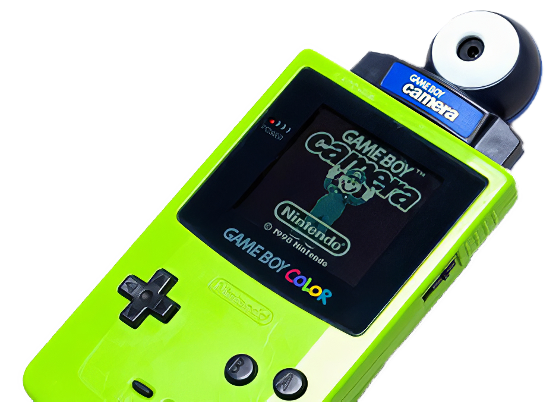
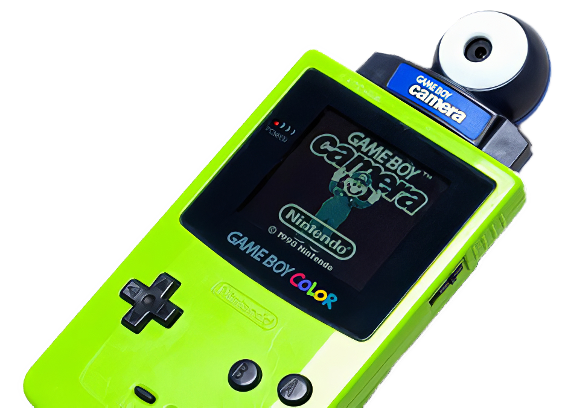

All × WorldRoom × >Tradair × S.A.D × Infinite Blade × Shonen GAN × Knives vs Fonts × SVP Zine × Hydra × D.A.D × Deforestagram × About
ShootViewPlay is a 1,7m long Zine made with a Gameboy Camera and printed in thermal paper. It has projects, interviews, a poem, a song and a tutorial to build an GBC photo extractor.
Special thanks to @alex.exn and @papayaaaaaaaaannnnnnnnnnnnnnnn
 
